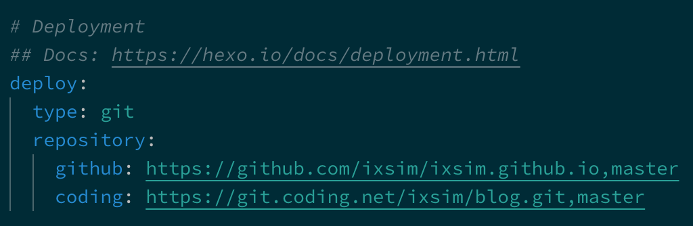

为了方便在两台电脑同时对博客更新，采用了创建分支的方法。将源文件上传。
创建仓库、分支
在博客的Hexo根目录下，正常的建仓库， 并和你要上传的仓库进行关联。
但是我们既然要建分支了，就是要【Push到存放静态网页的仓库】。
关键的语句其实就是git push origin master:dev-blog
其中。origin是远你给远程仓库起的别名。 master代表本地的master分支，dev-blog代表远程仓库的dev-blog分支，
如果我的仓库以前只用来存放静态网页，并没有这个dev-blog分支，执行了会怎么样？
答：自动创建dev-blog分支。
Ex,我的这一步就要这样：
cd Documents/Blog #到博客的根目录下
git init
git remote add Coding https://xxxx.git #关联远程仓库，起个别名叫Coding
git commit -m "推送到Coding测试"
git push Coding master:dev-blog
OK，等着就好了。push完后，去你的远程仓库看，会发现，dev-blog分支已经建好了。
以后每次想Push【源文件】，执行git push 仓库名 master:dev-blog就OK了。
更新静态页面
Hexo的推送完全不受影响，和以前一样hexo g -d就OK。
它要Push到的【仓库地址，分支名】完全取决于根目录下的_config.yml文件 的 deploy 配置。比如我的是这样的：

就是说，执行 hexo d的时候，会把【静态页面】push到我设置的那两个仓库的master分支。而我们的源文件是上传到dev-blog分支的。
拉取源文件
OK，现在源文件已经到仓库了。怎么在另一台电脑上Pull下来继续写博客呢？
- 首先确保新电脑上安装好
gitnodehexo - 执行
git clone -b dev-blog xxxx.git从原仓库把dev-blog分支克隆下来。
这样源文件就已经在新电脑上了。cd到该目录执行：
npm install hexo // 安装hexo 安装完成hexo 不需要初始化hexo，否者hexo 配置参数会重置
npm install // 安装依赖库
npm install hexo-deployer-git --save // 安装部署相关配置
这样Hexo也可以用了。
如果一台电脑要更新源文件，就使用第一步的git push 仓库别名 master:dev-blog语句进行Push。Push好了。记得另一台电脑使用git pull 仓库别名 dev-blog来更新源文件！！！